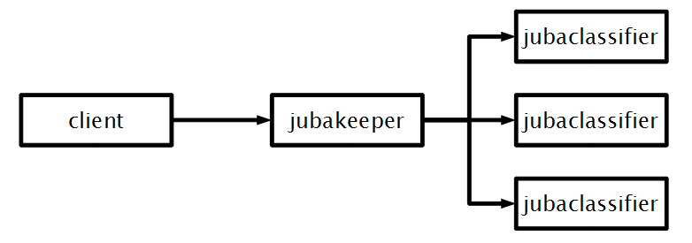
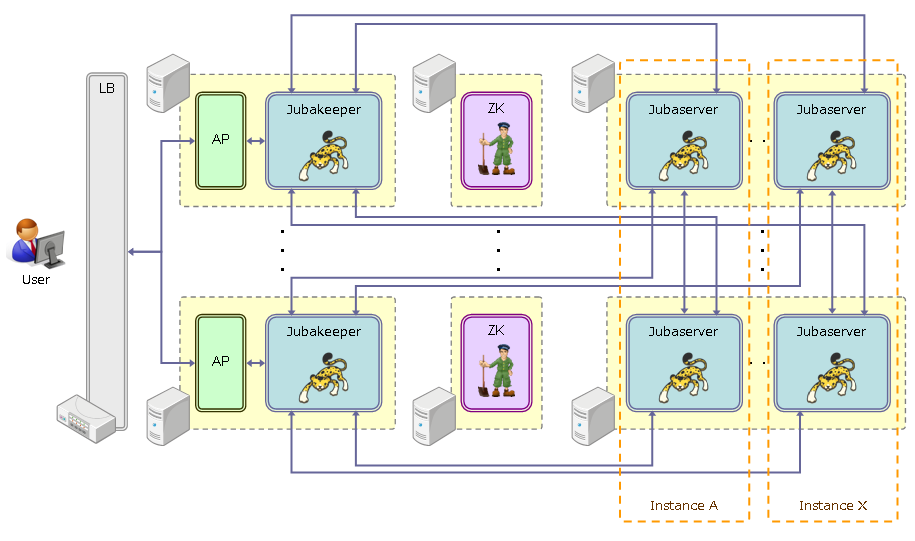

1.3. アーキテクチャ概要¶
本項では、Jubatusの構成に関する以下の3点について説明します。
・ システム構成
・ 学習モデルの共有
・ 計算モデル
1.3.1. システム構成¶
Jubatusには3種類のノードが存在します。分析を行うサーバノード、サーバノードに学習データを渡し、結果を受け取るクライアントノード、そしてこれらを管理する管理ノードの3種類となります。
サーバノードはモデル情報を格納し、クライアントノードから受け取ったデータを用いて分析を行います。 分析の際には他のサーバノードとは強調動作する必要はありません。 自分が保有しているモデル情報を他のサーバノードと共有するために、定期的にMix操作を呼出、自分のモデル情報を交換します。
クライアントノードは、実際にデータをサーバノードに与え、処理結果を受け取るノードです。 クライアントノードは管理ノードに問い合わせを行うことで、サーバノードの一覧を得て、データを与えるべきサーバを決定します。
管理ノードはサーバノードの管理を行い、サーバノードの死活監視やクライアントノードからの問い合わせを処理します。また管理ノード自体も分散協調動作をし、耐障害性を確保しています。
パターン1
Jubatusの最も基本的なシステム構成は、以下の図に示すような単一のJubatusクライアントと単一のJubatusサーバの組み合わせとなります。

パターン2
Jubatusではサーバノード側の処理をスケールアウトさせるため、以下の図のように複数のサーバノードを使用した分散環境とし、分散処理を行うことができます。 この際、ZooKeeperを用いて複数サーバノード間のプロセスを強調動作させる必要があります。
パターン3
クライアントノードからKeeperに対してクエリーを投げることで、複数のサーバノードで分散して学習や分析を行うことができます。 Keeperでは、クライアントノードからのクエリーを適切な（1台または複数台の）サーバノードに中継します。 クライアントノードは、接続先が単一のサーバノードであるか、Keeperであるかを意識する必要がありません。
Jubatusでは、データ量が膨大である、データソースが離れているなどの理由でクライアントを分散させることも可能です。 この場合は、以下の図のように複数のKeeperを実行して、それぞれのクライアントに異なるKeeperを割り当てることになります。

システム構成による分析精度・処理性能の違い
システム構成パターン1～3について、分析精度および処理性能の違いを以下にまとめます。
システム構成 分析精度 処理性能 パターン1 パターン2、3に比べ、精度が高い パターン2、3に比べ、性能が低い パターン2 パターン1に比べ、精度が低い パターン1に比べ、性能が高い パターン3に比べ、性能が低い パターン3 パターン1に比べ、精度が低い パターン1に比べ、性能が高い パターン2に比べ、性能が高い
推奨するプロセス配置構成について
Jubatusを高い信頼性のもとで提供するためには、分散環境で動作させる必要があります。また高いパフォーマンスを維持するためには、JubatusおよびJubatusに関連するプロセス配置構成に気をつける必要があります。 以下の図に、推奨するプロセス配置構成を示します。

- ・ Jubatus Keepers
運用の容易さ、アプリケーションの実装の容易さから、クライアントアプリケーションと1:1の構成とし、クライアントアプリケーションと共にスケールする運用を推奨します。
クライアントアプリケーションからKeeperへ通信できない場合（プロセスがダウンしているなど）に対しては、提供するサービスに応じて信頼性を保証する方法を検討する必要があります。例えば、以下のようなことが考えられます。
- Keeper プロセスを監視し、Keeperと通信できない場合は、クライアントアプリケーションへのユーザからのアクセスを遮断する。
- 別のKeeperとの通信へ切り替える。
- ・ Jubatus Servers
–name で同じ名前を指定することで、複数のサーバプロセスが協調動作します。Jubatusは、サーバプロセスが1つでも動作している限り、利用可能です。
上の図では、マシンのN 台に障害が発生した場合でも、すべてのインスタンスが利用可能なよう、N+1台のマシンに分散してプロセスを配置しています。
Jubatusはすべてのデータをメモリ上で処理するという特徴があります。マシンのリソース(特にメモリ)が不足しないよう、サーバプロセスの配置には注意する必要があります。
- ・ZooKeeper
Jubatusを分散環境で動作させる際、ZooKeeperが利用できない状況は致命的です。ZooKeeperを高い信頼性で動作させるために、以下のことを注意します。詳細はZooKeeperのドキュメントを参照して下さい。
- 奇数台のマシンによるクラスタ構成(アンサンブル)で運用します。
- ZooKeeperのパフォーマンスが低下し、Jubatusの動作が不安定になることを避けるため、ZooKeeper専用のマシンを用意することを推奨します。
1.3.2. 学習モデルの共有¶
Jubatusはモデル情報を緩やかに共有し、同一時刻において同じモデルが全サーバノードで共有されていることが保証されていない、という割り切りをしています。
一般にリアルタイム、大規模分散、深い分析の3つの特徴はトレードオフの関係にあり、全てを同時に満足させることは困難です。 例えばMapReduceなどの基盤はバッチ処理に特化しており、クエリーの結果を瞬時に得ると言ったことは苦手です。またComplexEventProcessingなどにおいては複数のノードの情報を共有することは困難です。
Jubatusはオンライン機械学習やオンラインアルゴリズムの積極的な活用、および緩やかなモデル情報の共有によりこれらの問題を解決しています。
1.3.3. 計算モデル¶
Jubatusでは、Update、Analyze、Mixと呼ばれる3つの種類の操作を定義することで、分散環境においてもさまざまなデータ分析を行えることを実現しています。 これは、MapReduceがMapとReduceの2つの操作を定義することで分散処理を実現することと同様です。
- ・ Update
- Updateでは、データと現在のモデルが与えられた時、更新したモデル結果を返す操作です。この操作は各ローカルノード（各サーバノード）内において排他的に行う必要があります。
- ・ Analyze
- Analyzeでは、現在のモデルに基づいて与えられたデータを分析し、分析結果を返す操作です。この操作はモデルを更新せず読み込み処理だけで実現でき、並列可することが可能です。
- ・ Mix
- Mixは2つのモデルが与えられた時、それらを混ぜたモデルを返す操作です。多くの分類の学習問題など、凸最適化問題に帰着する問題においては、Mix操作は単純な平均操作で高速に収束することが知られています。
Update、Analyzeの2つの操作はユーザがクライアントノードから呼び出す操作であるのに対し、Mixはユーザから呼び出すことは無く、分析モデルにしたがってシステム側が裏で自動的に呼び出すようになっています。